Block 2B — final product closure
TECHNICALLY_CLOSED · PRODUCT_APPROVAL_PENDING · generated 2026-08-13T13:15:36.012Z
Everything below is measured or photographed from the running prototype. Where a piece of evidence is incomplete, it says so on the page. Nothing here is approval — that is Juanma's, and this exists to make it possible to give or refuse it by looking.
A · The Museum crossing, as it moves
Galería A → Galería B. Each frame is a named frame of one crossing, captured by stepping the runtime by hand with the render loop stopped.
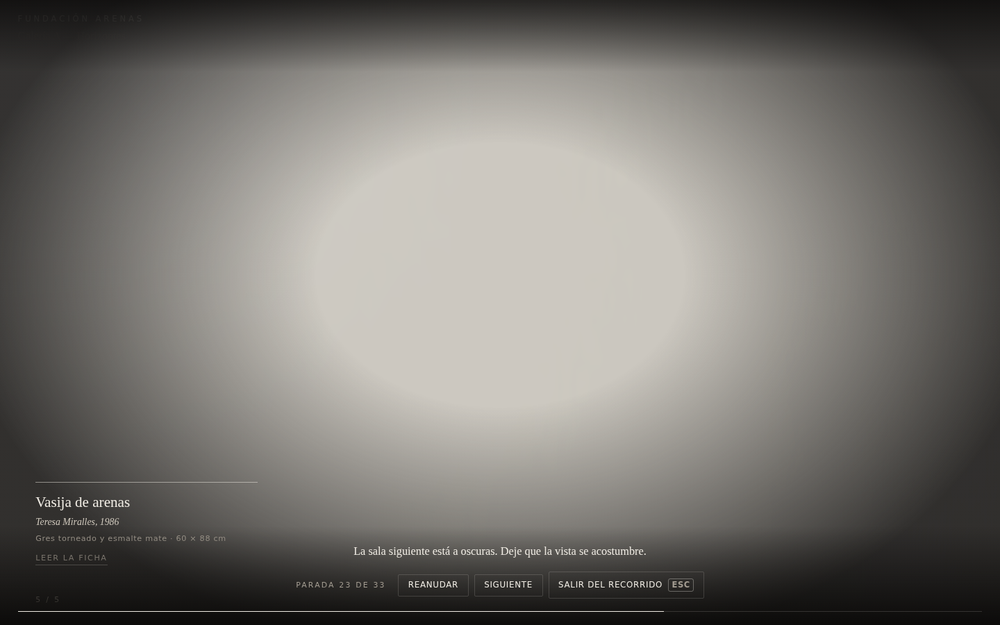
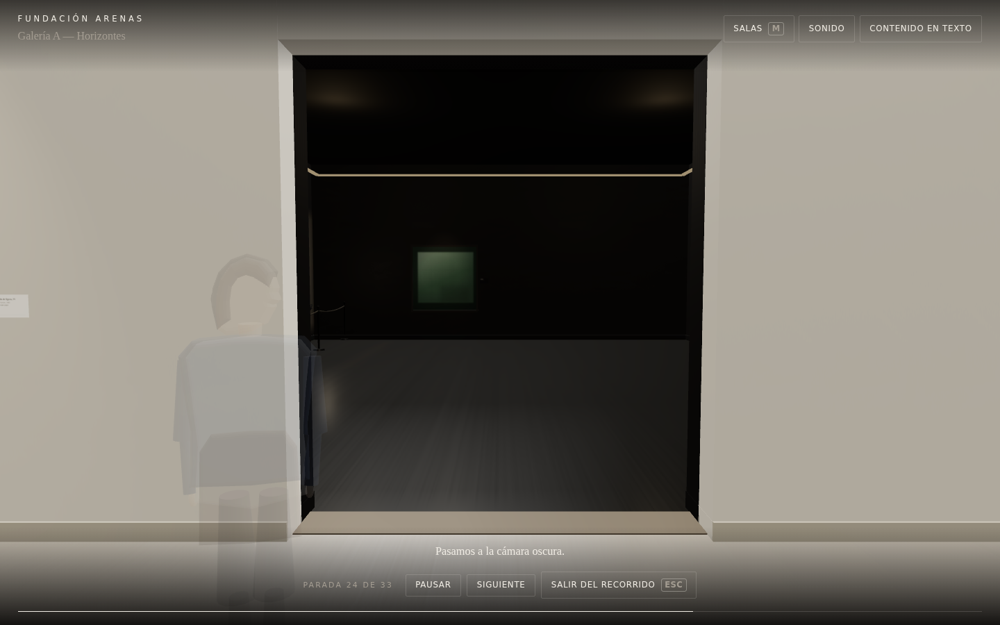


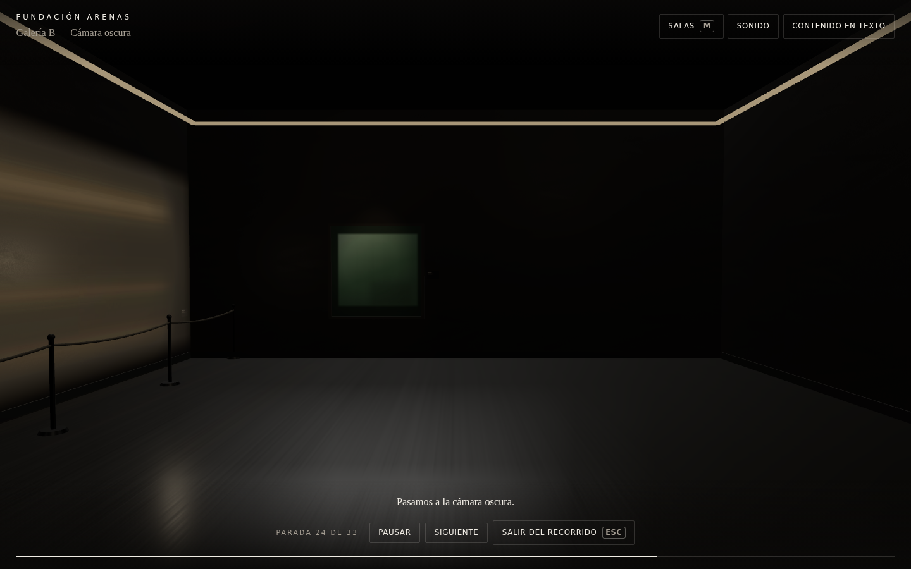
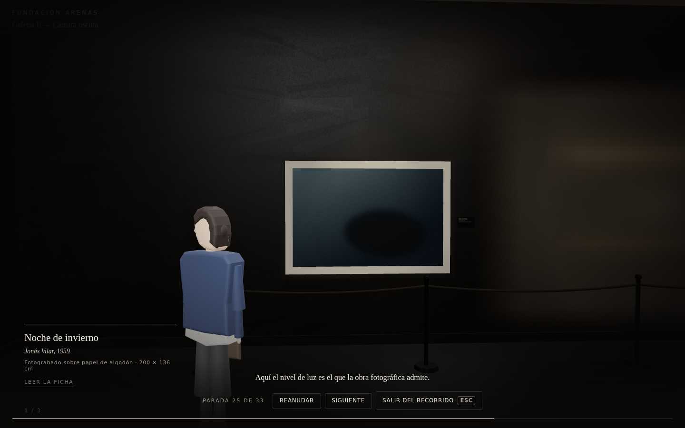
B · The owned Infinite Worlds reference
Run from the canonical snapshot 453ed40 with the exact dependency versions
the source pins, served locally because esm.sh is blocked here.
It shows how the reference presents a destination before you reach it: the other world rendered live inside a framed portal surface, with a distortion and edge treatment over it. That is the dimension the Museum decision turns on.
It does not show the completed world swap. The crossing is triggered by clicking the portal and the click did not land on its interaction target. The portal's noise texture is also a local stand-in, because the original is served from a blocked host — so the noise pattern differs from the real thing, while the choreography and the render-target portal do not.
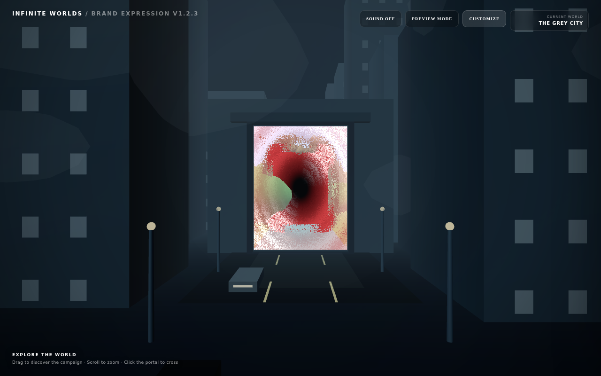
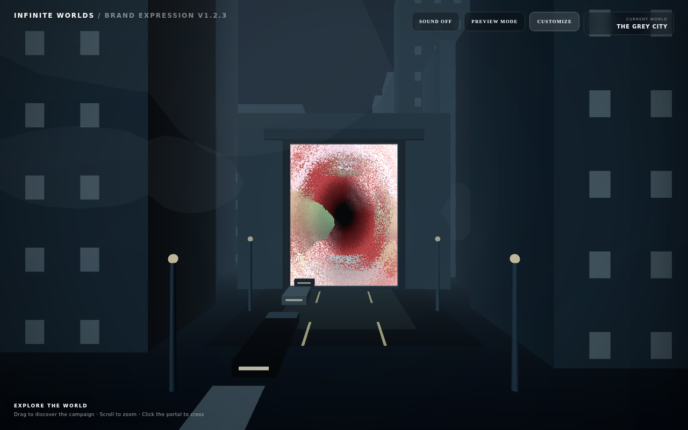
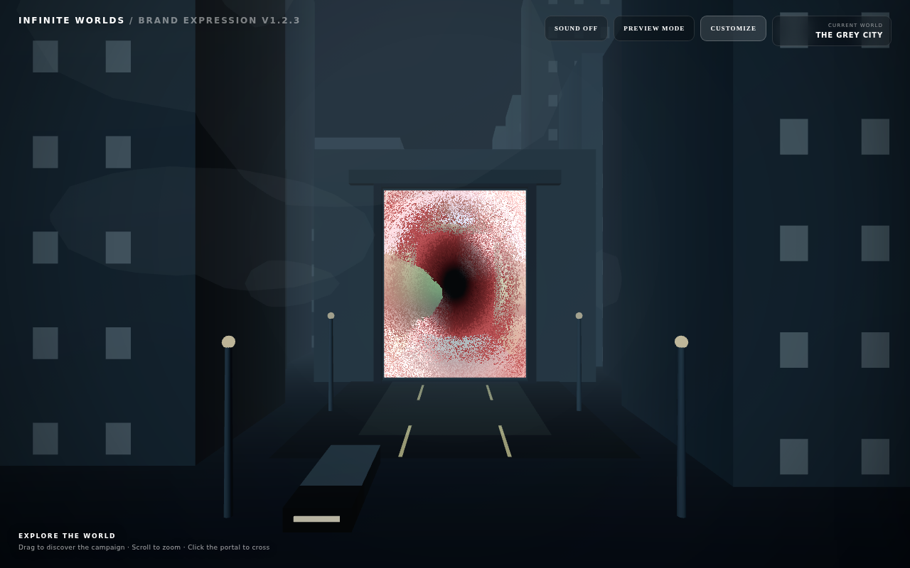
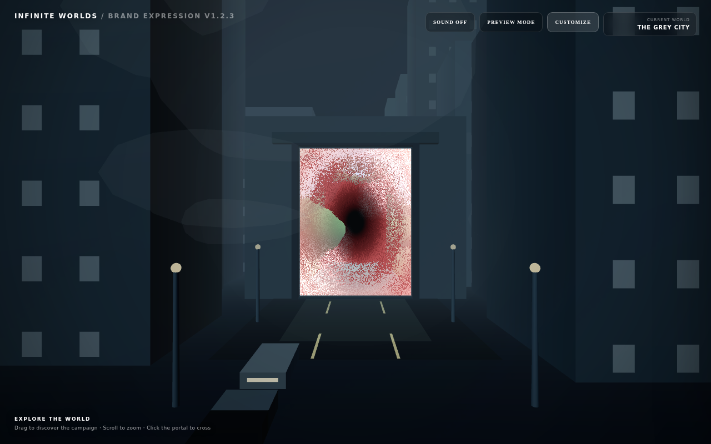
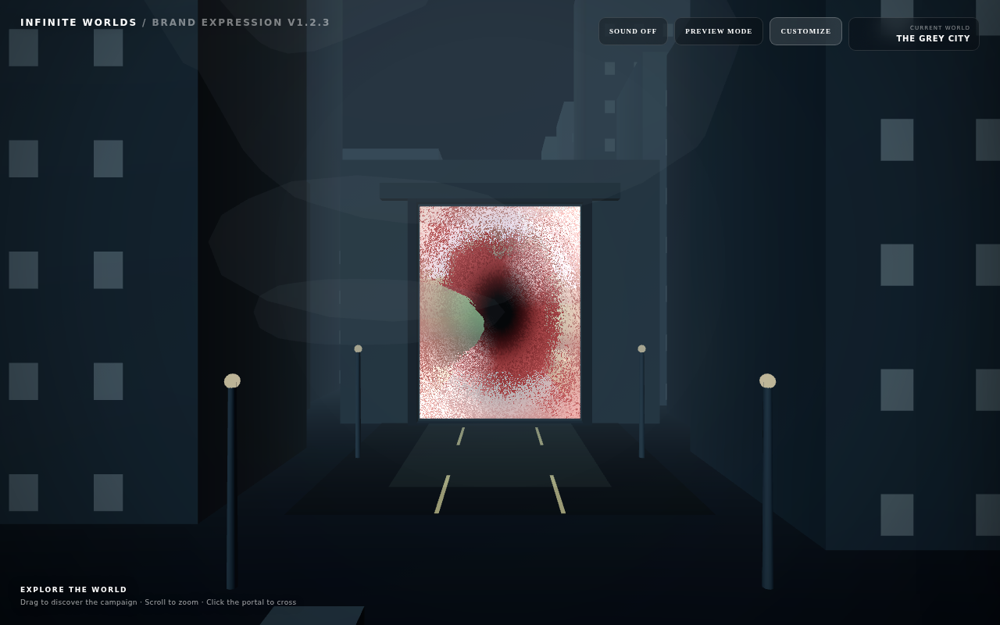
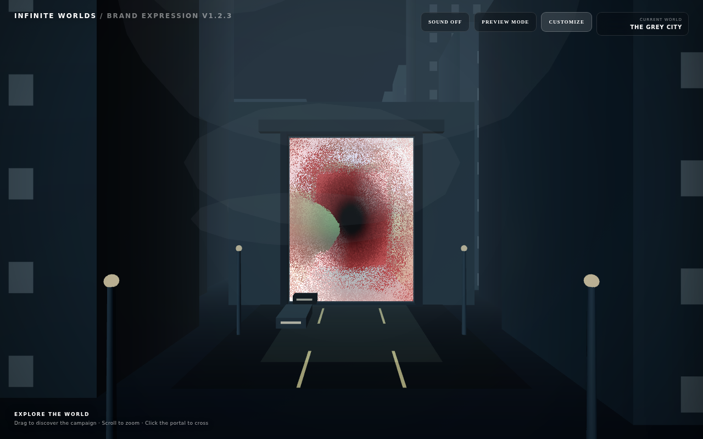
What the two products actually do differently
| Infinite Worlds | Museum | |
|---|---|---|
| Why a portal exists | two scenes share coordinates; a texture is the only way to see one from the other | two rooms share a wall with a real hole in it |
| Destination presence | rendered to a 2048² target, shown on a portal surface | the actual room, seen through the actual opening |
| Parallax and depth | correct, via frameCorners | native — it is the same scene |
| Portal treatment | distortion, edge glow, chromatic fringe | none; the architecture is the frame |
| Crossing | camera to portal, world swap, camera to origin | one continuous move through the aperture |
| Cameras | two, synchronised | one, always |
C · Portal treatment — the open decision
Variant A — architectural only. Built, measured, and shown in section A. The doorway is the frame; nothing is added.
Variant B — adapted first-party treatment. Not built. Section B shows what that treatment looks like in its own product, which is the honest basis for deciding whether it belongs on an institutional doorway.
Variant C — subtle hybrid. Not built.
Recommendation, and it is only that: keep A. Look at 05_middle.png — the
jamb framing the dark chamber, Noche de invierno ahead, the cove line running away
over the ceiling. The spectacle there is the building. The reference's treatment
earns its place because its portal is a surface that must announce itself as a
portal; a Museum doorway is already a doorway. Final call is Juanma's, and B and C
remain buildable if he wants them seen.
D · Guide at the threshold — before and after
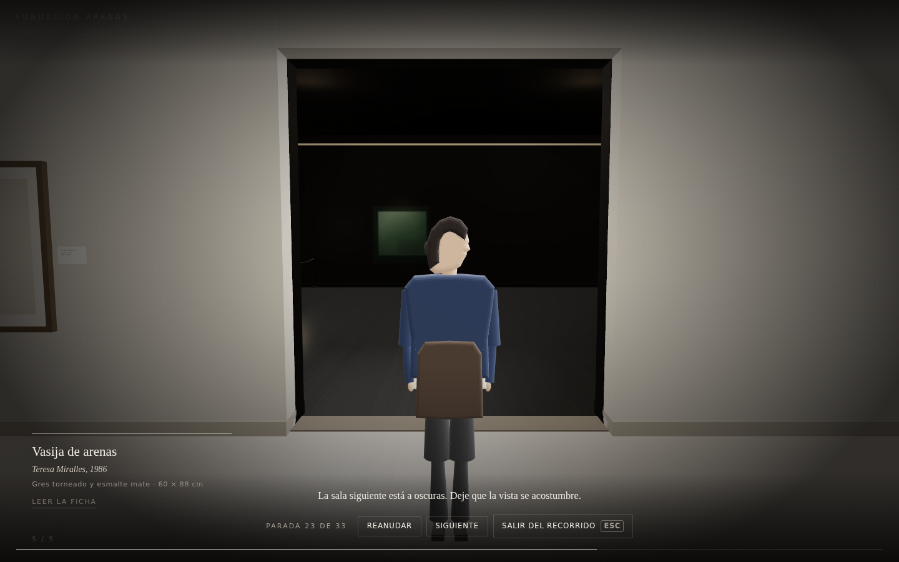
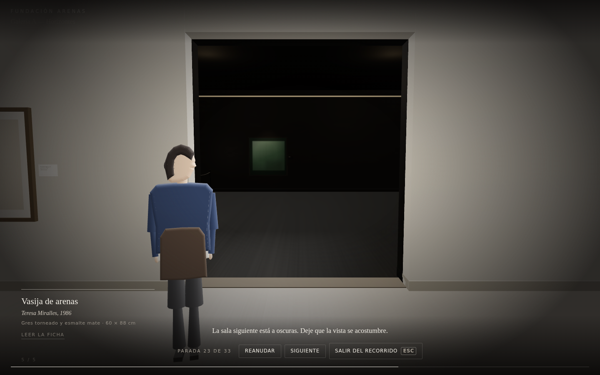
| before | after | |
|---|---|---|
| camera position | 3.4, 1.62, -10 | 3.4, 1.62, -10 |
| camera target | 7.5, 1.26, -10 | 7.5, 1.26, -10 |
| guide anchor | 6.3, 0, -10 | 6.3, 0, -10 |
| guide staged at | 6.3, 0, -10 | 6.3, 0, -10.92 |
| blocks the centre | YES | no |
| crossing clearance | 0 m | 0.92 m |
The camera did not move. The fix is two lines of world data — aside: true, the
same authored grammar every cesión beat already uses — because the camera for this
beat is derived from the guide anchor, so moving the anchor would have dragged the
approved endpoint with it.
E · Lobby → Galería A
This became a crossing as a consequence of T6 following beat intent rather than portal identity. It was outside the authorised slice, so it has now been looked at.
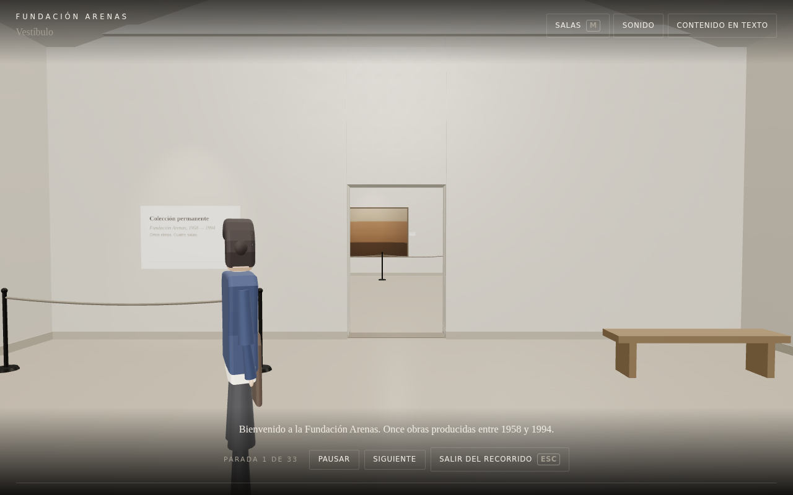
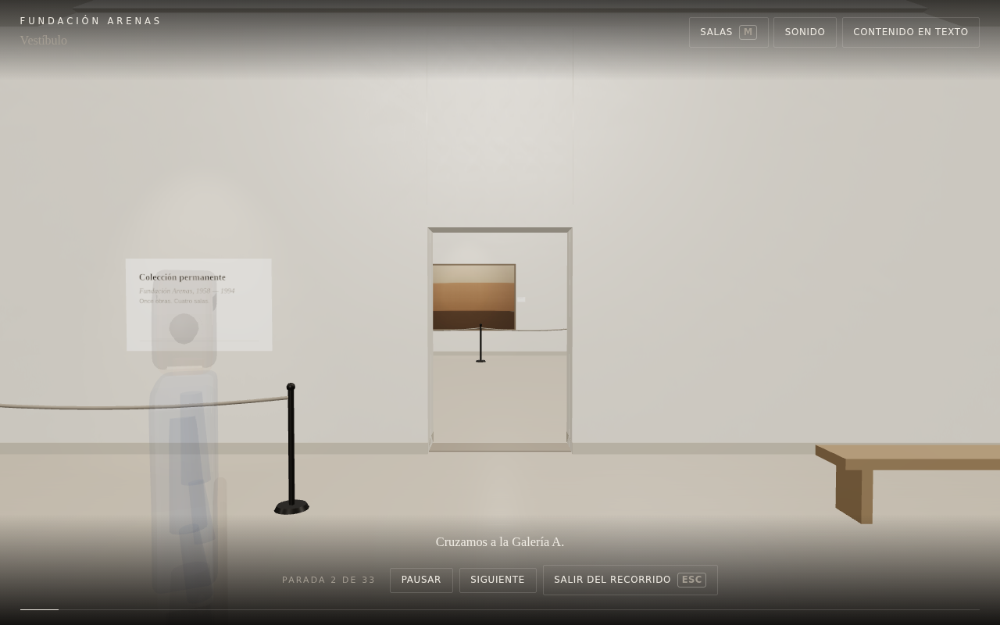
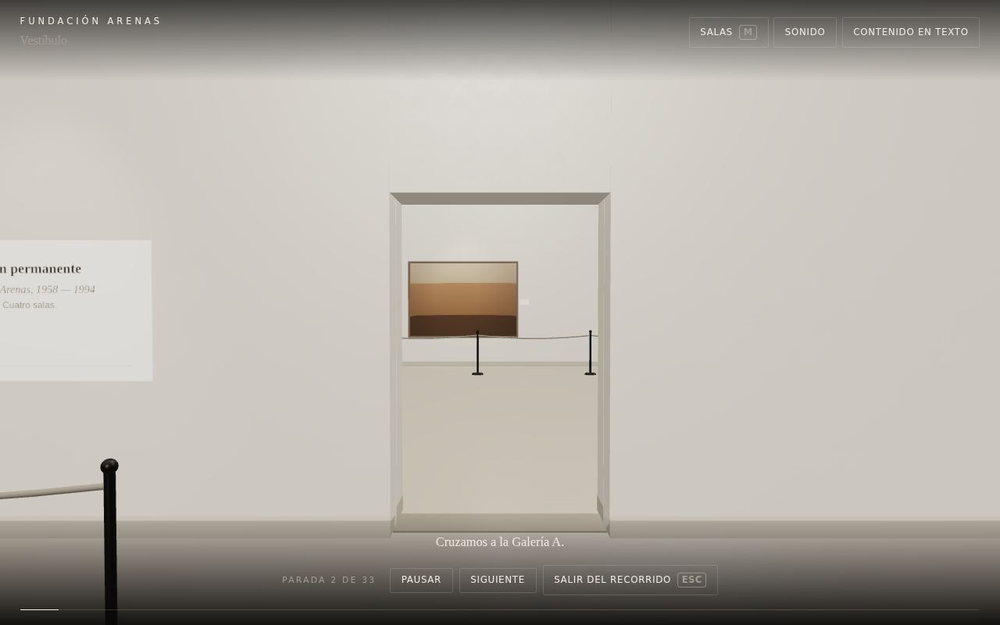
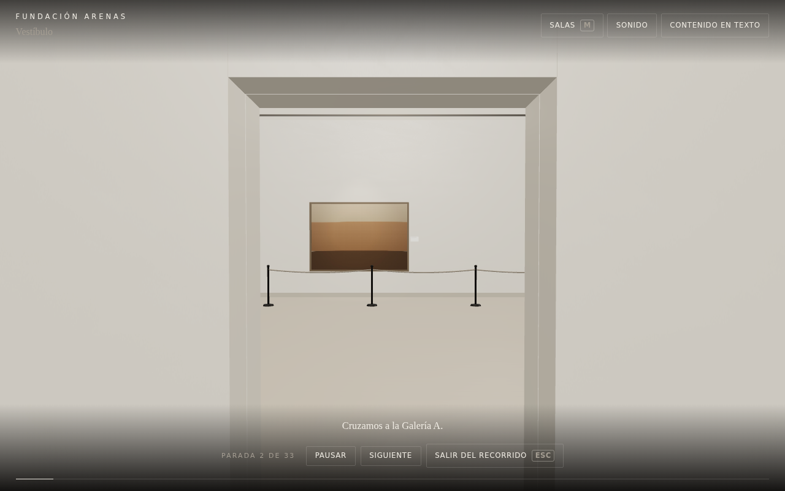
Decision: keep it. It is the same thing semantically — a continuous passage between adjacent spaces through a real aperture — and it reads as a museum entrance: welcomed in the vestíbulo, then walked through the jamb with the first work ahead. No inappropriate spectacle is introduced, and that is measurable rather than a matter of taste: lobby and Galería A share the white-cube profile, so the atmosphere blend is provably inert (exposure 0.95 → 0.95, worst single-frame step 0).
Rule to record: T6 applies to any PORTAL beat whose portal is CONTINUOUS.
TELEPORT portals stay cuts. representationHint (DOOR 1.5 m vs OPENING 2.6 m)
is available as a future profiling axis, but nothing measured so far demands a split.
F · Direct seek and state reconstruction
| stop | beat | playback | reconstruction | state equivalence |
|---|---|---|---|---|
| early | step.03-lleva-horizonte | 24459 ms | 1656 ms | 0 of 23 fields differ |
| mid | step.06h-lleva-vasija | 43253 ms | 3227 ms | 0 of 23 fields differ |
| late | step.10c-lleva-cuaderno | 72365 ms | 19740 ms | 0 of 23 fields differ |
The headline number this mission was given — a ~100 s seek — was a software-rasteriser artefact, not a product cost: a frame here takes about two seconds and about ten milliseconds on a GPU. Chasing it exposed two real defects underneath. Seek latency was coupled to frame time, because the step yielded through a timer that queues behind rendering; and a reconstruction was flying full crossing choreography at every portal beat, in real time, for nobody. Both are fixed, and equivalence was re-proven after the change rather than carried over from before it.
Still open, and for whom
| question | owner | state |
|---|---|---|
| Is the Museum crossing perceptually ≥ Infinite Worlds? | Juanma + ChatGPT | partial evidence — approach compared, swap not captured |
| Portal treatment A / B / C | Juanma | A built; B and C not built |
| Guide threshold composition | Juanma | fixed, before/after available |
| Lobby → Galería A rule | Juanma to ratify | decided on evidence, documented |
| Reaching a late stop still costs ~19 s of room building | backlog | real work, not overhead |